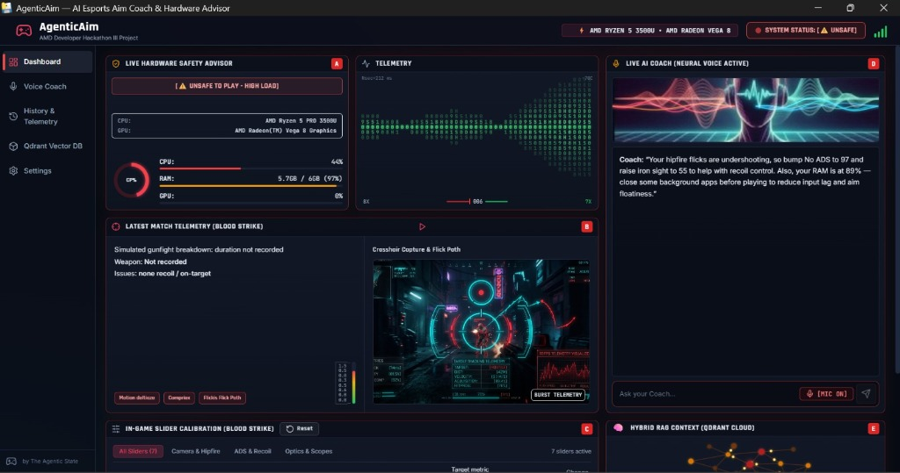
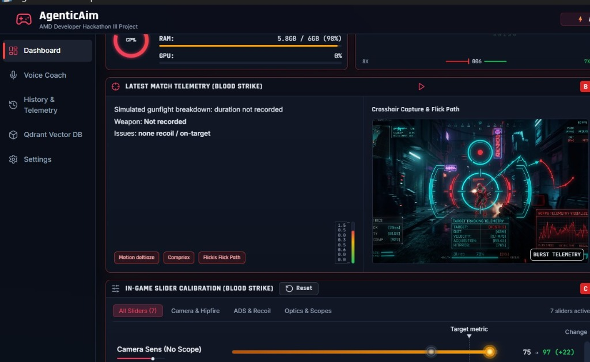
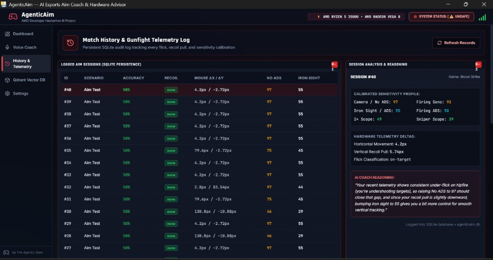

About AgenticAim
An autonomous, voice-interactive AI Esports Aim Coach & Hardware Safety Advisor engineered specifically for competitive Blood Strike players.
Bridging Competitive Gaming & Autonomous Voice AI
AgenticAim was conceived and architected as our official project for the AMD Developer Hackathon III. Designed specifically for the fast-paced competitive arena shooter Blood Strike, the system tackles a universal challenge in competitive gaming: how players identify mechanical aim deficiencies, eliminate hardware-induced input lag, and optimize in-game camera sensitivities in real time.
Rather than relying on static tips, AgenticAim operates as a live, voice-enabled esports coach. It actively listens to gamer voice queries through microphone detection (`[MIC ON]`) and responds back through real-time neural voice synthesis. Players receive conversational, actionable diagnostic advice during match intervals without needing to take their hands off the mouse and keyboard or alt-tab away from the battle.
- Real-time Voice Detection & Verbal Responses: The AI agent detects voice questions, performs intelligent context retrieval, and speaks back via natural neural voice audio.
- Blood Strike Gunfight Telemetry: Uses computer-vision crosshair tracking to analyze target acquisition, flick path trajectories, burst speed, and recoil pulls during live gameplay.
- Dynamic In-Game Slider Calibration: Directly prescribes pinpoint camera and hipfire sensitivities (Camera Sens, No ADS, Iron Sight, Optics) based on player flick performance.
-
Persistent SQLite Match Audit Log: Logs every aim session into
agenticaim.db, preserving mechanical accuracy %, mouse pixel deltas, and natural-language AI coaching reasoning. - AMD Hardware Safety Advisor: Continuously monitors AMD Ryzen 5 CPU, Vega 8 GPU, and system RAM loads to prevent stutter, aim floatiness, and latency spikes.
"Ask your Coach... Spoken AI Feedback"
As demonstrated in our live agent frontend, the coach analyzes user telemetry and replies aloud via neural voice synthesis:
Verified Agent Frontend Interfaces
Inspect the three core modules of the AgenticAim application, built for real-time esports coaching, automated Blood Strike calibration, and persistent telemetry logging.

Full Dashboard & Voice Coach Interface
The central mission control of AgenticAim displays real-time telemetry, live voice coaching synthesis, hardware safety monitoring, and Qdrant Cloud vector memory.
- Voice Coach with Neural Audio: Detects speech through the [MIC ON] prompt and speaks back tactical instructions.
- Hardware Safety Advisor: Monitors AMD Ryzen 5 CPU, Vega 8 GPU, and RAM load to warn players of high system stress.
- Hybrid RAG Context: Connects to Qdrant Vector Cloud for situational gameplay guidance and knowledge retrieval.

Blood Strike Match Telemetry & Calibration
Dedicated specifically to Blood Strike mechanics, this panel breaks down gunfight aiming dynamics, tracking lines, and calculated sensitivity offsets.
- Crosshair Capture & Flick Path: Traces hostile target distance (42m), velocity (3.1 m/s), acquisition (89.4%), and hit probability (76%).
- In-Game Slider Calibration: Directly prescribes sensitivity shifts (e.g., Camera Sens No Scope 75 → 97) to eliminate undershooting.
- Burst Telemetry Visualizer: Displays real-time recoil curves and stability metrics during intense fire exchanges.

Match History & AI Coach Diagnostic Reasoning
Every match and training trial is saved to an audit log powered by SQLite (agenticaim.db), complete with exact mouse deltas and natural language coach diagnostics.
- Logged Aim Sessions: Records scenario name, accuracy %, recoil classification, and sub-pixel mouse ΔX / ΔY deltas.
- Comprehensive Sensitivity Profiles: Maintains calibrated profiles for Camera, Firing Sens, Iron Sight, 2x Scope, and Sniper Scope.
- Transparent AI Reasoning: Generates human-readable explanations detailing exactly why sensitivity shifts were recommended.
Spoken neural dialogue, hardware load monitoring, and vector memory.
Live crosshair flick path analysis, recoil tracing, and sensitivity calibration.
Persistent session logging in agenticaim.db with detailed AI diagnostic commentary.